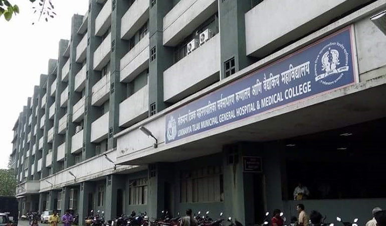

Colleges for B.Sc in Nursing in Mumbai
Shreemati Nathibai Damodar Thackersey Women's University - [SNDT]

The University offers courses in various streams like Arts, Fine Arts, Education, Commerce, Home Science, Library and Information Science, Technology, Management, Law, Science, and others.
P. D. Hinduja Hospital & Medical Research Centre College Of Nursing

P.D. Hinduja College of Nursing is a private nursing college established in the year 2006. It is affiliated to the Maharashtra University of Health Sciences and has been approved by Maharashtra Nursing Council and Indian Nursing Council. It has been accredited by NAAC with an ‘A’ grade. The college offers B.Sc. Nursing at the UG level, M.Sc. Nursing at the PG level and Ph.D. at the doctorate level. Admissions to the courses are entrance-based and admission forms are available on the college’s website. The college is equipped with great academic facilities for an outstanding learning environment.
The placement cell of the college plays a crucial role to enhance the skills of the students and make them understand how to showcase their talent and abilities in the best possible way. The cell organizes various guidance programs for all the students from the very first year. They also conduct mock interviews and organize various sessions on resume writing that could help the students to fit at their new workplace and make them such capable that their addition to any team proves to be a fruitful one.Lokmanya Tilak Municipal Medical College
The institute remains the best centres for medical education and research in the country. It started off as the Indian Military Hospital in 1947 with a single OPD and just 50 beds. In the year 1950, the institute was renamed as Lokmanya Tilak Municipal Medical College and General Hospital after the founding father, Lokmanya Bal Gangadhar Tilak. Since then, the institute has been providing an excellent education to students all over the country.
They offer undergraduate, postgraduate, Diploma and super specialty courses. The institute has obtained affiliation from the University of Mumbai and Maharashtra University of Health Sciences, Nashik. Undergraduate courses such as MBBS, BPTh, BOTh and BSc PMT are available. Postgraduate courses such as MD and MS are also offered.